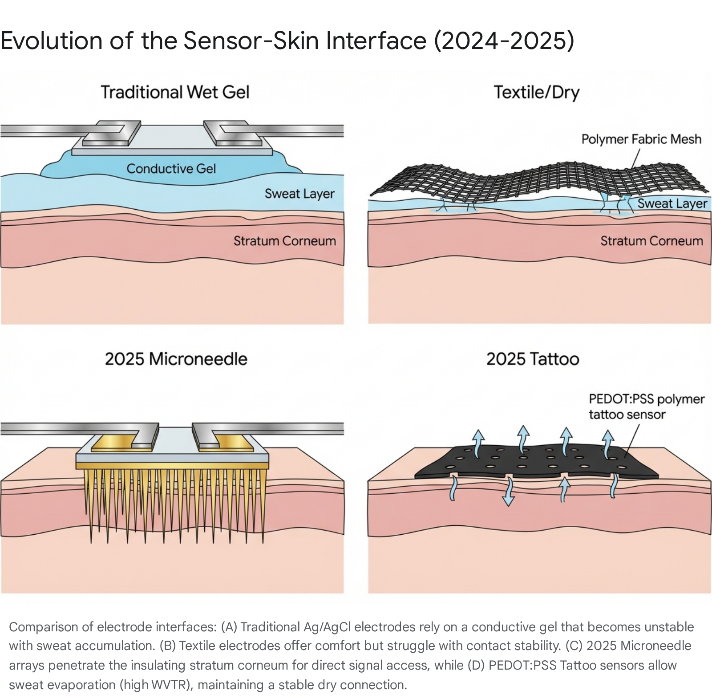

表面肌电(sEMG)应用深度研究报告 (2024-2025)¶
文档角色: 参考资料 - sEMG 技术在动态运动环境下的应用研究
目标读者: 技术团队、产品经理、研究人员
阅读时间: 30分钟
执行摘要¶
表面肌电图（Surface Electromyography, sEMG）作为一种能够直接量化神经肌肉激活程度的非侵入性技术，长期以来被视为生物力学、运动康复及人机交互领域的"金标准"。它提供了一个观察人体运动控制策略的独特窗口——不仅仅是肌肉产生了多少力量，更重要的是神经系统如何协调、激活以及在该过程中表现出的疲劳特征。然而，尽管sEMG在临床诊断和高端实验室研究中占据核心地位，但在2024-2025年的大众消费市场和动态竞技体育（特别是如高尔夫、短跑等高速度、爆发性运动）的实际应用中，该技术面临着显著的"落地悖论"：即数据的高潜在价值与获取高质量数据的高技术门槛之间的巨大鸿沟。
本报告旨在详尽探讨sEMG技术在2024-2025年的全景生态，深入剖析为何该技术尚未在大众层面普及的系统性原因，并重点关注高尔夫等高动态运动中面临的"信号三大魔咒"——运动伪影（Motion Artifact）、汗液干扰（Sweat Interference）和肌肉串扰（Crosstalk）。报告将详细评述2025年最新的材料科学突破，特别是超薄表皮电子（Epidermal Electronics）、透气性纳米网（Nanomesh）和微针阵列（Microneedle Arrays）如何重塑传感器与皮肤的物理接口，从根本上解决信号耦合的稳定性问题。
此外，我们将结合中国顶级研究机构（如清华大学柔性电子技术中心）及科技巨头（如华为）的最新专利布局，分析该领域的商业化前景，并为实验室和高水平运动队提供一套基于最新证据的实操解决方案，涵盖从电极放置、皮肤预处理到基于Transformer模型的高级信号去噪算法的全流程协议。
第一部分：sEMG技术的应用困境——为何"叫好不叫座"？¶
尽管sEMG能直接反映神经肌肉的控制策略，但直至2024年，它仍未像光电容积脉搏波描记法（PPG）用于心率监测那样，成为消费级可穿戴设备的标配。通过深入分析市场反馈、技术文献及用户行为数据，我们将这一现象归结为"可用性-精确性"的权衡失效以及消费者认知与技术现实之间的错位。
1.1 消费者采用的系统性障碍与"摩擦金字塔"¶
在消费级市场，用户习惯于"即戴即用"的体验，如智能手表的心率监测。然而，sEMG技术的应用流程呈现出一个倒金字塔形的摩擦结构，每一层级的复杂性都导致了用户的流失。与心率监测这种近乎零门槛的技术不同，sEMG要求用户在数据采集的每一个环节都必须进行主动干预，这构成了其普及的根本障碍。
1.1.1 极为苛刻的皮肤准备要求：物理摩擦的第一道墙¶
传统的湿式Ag/AgCl电极虽然在信号稳定性上表现优异，但其使用前提与普通用户的运动习惯背道而驰。为了获得可信的信号，必须将皮肤阻抗降低到一定阈值以下（通常建议低于5-10kΩ）。这要求进行严格的皮肤预处理：
- 剃除毛发：毛发不仅物理上阻隔了电极与头皮或皮肤的接触，还会因毛囊的微小移动产生噪声。
- 去角质（Abrasion）：使用研磨砂纸或专用磨砂膏去除死皮层（角质层），这对于很多消费者来说是不可接受的，因为它可能导致皮肤红肿或不适。
- 脱脂清洁：使用酒精擦拭以去除皮肤表面的油脂。
研究表明，皮肤阻抗的微小变化会导致信号幅度的显著漂移。在实验室环境中，这种繁琐的流程有专业人员操作，但在健身房或高尔夫练习场等场景下，用户不仅难以掌握这种标准化的预处理技术，更缺乏进行这些操作的意愿和条件。如果没有这些步骤，采集到的数据往往充满了基线漂移和接触噪声，缺乏参考价值。
1.1.2 "黑箱"数据的解释难题：从电压到意义的鸿沟¶
心率数据（BPM）是一个直观的绝对值，用户可以直接理解"150 BPM"意味着高强度运动。然而，EMG信号本质上是微伏（μV）级别的随机干扰图样（Interference Pattern）。原始信号不仅受到肌肉收缩强度的影响，还受到皮下脂肪厚度、电极位置、皮肤湿度等多种非生理因素的影响。
MVC标准化的悖论：为了使不同个体或同一个体不同日期的EMG数据具有可比性，必须进行最大自主收缩（Maximum Voluntary Contraction, MVC）标准化。这意味着用户在正式运动前，必须针对每一块被测肌肉进行一次"最大力量收缩"以校准传感器。这在操作上极其困难（需要专业设备固定身体），且存在安全风险（尤其对于伤病康复人群）。
缺乏统一标准：目前的消费级设备缺乏统一的算法标准，不同设备间的数值（如"肌肉激活分"）无法互通，用户无法建立长期有效的健康档案。大多数消费者看到的只是一堆跳动的波形，无法将其转化为"肌肉疲劳度"或"发力效率"等可行动的洞察。
1.1.3 佩戴舒适性与美观度的冲突¶
传统sEMG传感器通常包含刚性的电子元件（放大器、电池、蓝牙模块），体积庞大且无法贴合人体曲线。在高尔夫挥杆等涉及大幅度躯干扭转的运动中，刚性传感器不仅会产生异物感，还会因惯性产生相对位移，破坏数据质量。此外，多通道采集需要的线缆（即便在无线系统中，电极与发射端之间往往也有短线连接）极易缠绕，不仅影响动作表现，还存在安全隐患。
1.2 经济与认知壁垒：从医疗到消费的跨越陷阱¶
根据2025年的市场分析，尽管全球肌电图系统市场规模预计将从2024年的18.1亿美元稳步增长至2034年的34.7亿美元（年复合增长率6.72%），但这种增长主要由医疗诊断需求驱动。例如，肌萎缩侧索硬化症（ALS）、肌营养不良和周围神经病变等神经肌肉疾病的患病率上升，推动了医院和诊所对EMG设备的需求。
然而，在消费端，市场却显得"叫好不叫座"。消费者普遍将可穿戴科技视为"可自由支配支出"（Discretionary Spending）。在缺乏杀手级应用（Killer App）和明确健康收益的情况下，购买意愿停滞不前。目前的市场反馈显示，大多数可穿戴设备的购买来自于设备的升级换代，而非新用户的涌入，这意味着sEMG产品未能提供足够的新鲜价值来突破现有的用户圈层。
对于高尔夫等运动人群，虽然他们愿意为能提升表现的装备付费（如高尔夫雷达、挥杆分析仪），但现有的商业化EMG解决方案（如Noraxon或Delsys）价格昂贵（数万美元），且需要专业分析师解读，这使得它局限于顶级职业训练，难以在大众市场普及。
第二部分：动态运动中的技术深水区——高尔夫场景下的信号挑战¶
高尔夫挥杆是一项极其复杂的全身运动，涉及在极短时间内（下杆通常仅需0.2-0.3秒）爆发性的力量传递。从生物力学角度看，它是"近端到远端"（Proximal-to-Distal）动力链的典型代表。这种高速度、大范围的动作对sEMG传感器提出了极端的挑战，我们称之为"信号三大魔咒"：运动伪影、汗液干扰和肌肉串扰。
2.1 运动伪影（Motion Artifact）：信号的致命噪声¶
在动态运动中，电极与皮肤界面的相对滑动是信号污染的首要来源。这种噪声之所以被称为"致命"，是因为它的物理特性使其极难通过传统滤波去除。
2.1.1 频谱重叠与滤波困境¶
运动伪影的能量主要集中在0-20Hz的低频段。不幸的是，这也是肌肉放电信号（特别是慢肌纤维的运动单元动作电位）的重要基频区域。简单的滤镜（如20Hz高通滤波）虽然能去除部分伪影，但也会不可避免地切除真实的肌电信号，导致信号能量（RMS）被低估，严重扭曲对肌肉激活时序和疲劳度的评估。
2.1.2 惯性位移与接触阻抗变化¶
在高尔夫击球瞬间（Impact），球杆与球的碰撞会产生巨大的震荡，这种震荡通过手臂传递至全身。同时，挥杆过程中的离心力会导致贴附在皮肤表面的传感器受到拉扯。如果传感器具有一定的质量（Mass），它会因惯性产生微小的位移或抖动。这种抖动会导致电极-皮肤界面的双电层电容（Double Layer Capacitance）发生瞬时变化，产生幅度可能高达数毫伏的电压尖峰（Artifact Spike），这远超真实的微伏级肌电信号。
2.1.3 软组织共振（Soft Tissue Artifact）¶
即使传感器在皮肤表面固定得非常牢固，下层的软组织（脂肪、肌肉）在挥杆的急剧加减速过程中也会发生相对于骨骼的形变和震荡。这种"内部伪影"会导致电极下方的肌肉纤维发生物理位移，使得传感器在不同时刻记录到的可能是不同的运动单元（Motor Unit），从而破坏了信号的时间一致性。
2.2 汗液干扰：导电性的双刃剑¶
汗液对sEMG信号的影响具有复杂的时变特性，在高尔夫这种通常持续4-5小时的户外运动中，汗液管理是传感器设计的核心难题。
2.2.1 初期效应与长期衰减¶
在运动初期，微量的汗液能湿润皮肤角质层，填充皮肤微褶皱，从而降低电极与皮肤的接触阻抗，这在某种程度上能短暂提升信号质量。然而，随着运动持续，大量汗液在皮肤表面积累，形成一层高导电的电解质溶液层，即"盐桥"（Salt Bridge）。
2.2.2 信号分流效应（Shunting Effect）¶
当汗液层形成后，它提供了一条比穿过皮肤进入传感器更低阻抗的电流路径。这导致肌肉产生的电信号在到达电极之前，就通过皮肤表面的汗液层"短路"或"分流"了。这种现象被称为Shunting Effect。研究数据显示，汗液层每增加0.02mm，信号幅度可能衰减2%-3%。对于高强度运动，这种衰减是显著且不可逆的，直接导致后期数据的信噪比（SNR）雪崩式下降。
2.2.3 物理滑动与脱落¶
除了电学性能的恶化，汗液还充当了润滑剂，显著降低了电极胶与皮肤之间的摩擦系数。在高尔夫挥杆的剧烈扭转中，这极易导致贴片式传感器脱落或发生大范围滑动，造成数据中断。
2.3 肌肉串扰（Crosstalk）：谁在发力？¶
高尔夫握杆和挥杆高度依赖前臂肌肉群（如屈腕肌和伸腕肌）的精细控制。然而，前臂解剖结构紧凑，多块肌肉重叠且体积较小，这使得sEMG信号的空间分辨率面临严峻挑战。
2.3.1 体积导体效应（Volume Conductor Effect）¶
人体组织（脂肪、皮肤、体液）是导电的"体积导体"。sEMG传感器不仅记录正下方目标肌肉的电活动，还会接收到周围甚至深层肌肉通过身体组织传导过来的电信号。这种现象被称为串扰。例如，在用力挥杆时，深层的指浅屈肌（FDS）的信号极易混入表层的桡侧腕屈肌（FCR）记录中。
2.3.2 误判风险与生物力学分析¶
串扰会导致"假阳性"激活。在分析挥杆释放（Release）阶段时，如果无法区分负责握力的肌肉和负责手腕角度维持的肌肉，就无法准确评估握杆压力与手腕释放时机的关系，从而误导教练的战术调整。研究表明，在高激活水平下，未经过空间滤波处理的sEMG信号，其串扰幅度可能高达原始信号的10%以上，足以掩盖细微的控制策略变化。
第三部分：2024-2025年材料科学革命——超薄传感器与界面解决方案¶
为了解决上述物理层面的问题，2024年至2025年间，学术界和产业界在柔性电子（Flexible Electronics）领域取得了突破性进展。核心思路是从"佩戴"设备转向"共形"（Conformal）设备，即让传感器在机械性能和物理形态上成为皮肤的一部分，从而消除界面不稳定。
3.1 电子纹身（Electronic Tattoo）与透气性突破¶
传统的薄膜传感器（如PDMS或PI基底）虽然柔软，但透气性差，长期佩戴会导致皮肤积汗、过敏，进而破坏信号。2025年的研究重点在于实现传感器的"呼吸"能力。
3.1.1 PEDOT:PSS纳米网纹身电极¶
2025年的最新研究展示了基于PEDOT:PSS（一种高导电聚合物）的超薄纹身电极。这种电极通过静电纺丝或喷墨打印技术制造，厚度仅为纳米级，具有极高的水蒸气透过率（WVTR，达70 g m⁻² h⁻¹），远超商用薄膜，接近正常皮肤的排汗速率。
- 透气机制：这种纳米网结构允许汗液以蒸汽形式自然透过，而不是积聚在电极下方。
- 信号稳定性：实验证明，在剧烈运动出汗后，这种电极的信号阻抗几乎不随时间漂移。相比之下，传统Ag/AgCl湿电极在2小时后，由于凝胶吸水膨胀和电解质平衡破坏，阻抗会大幅下降并伴随基线漂移。
- 干式接口：不同于依赖导电凝胶的湿电极，这种纹身电极与皮肤形成干式电容耦合。虽然初始阻抗较高，但在动态出汗条件下，其稳定性远超湿电极，非常适合高尔夫这种长达4-5小时的运动场景。
3.2 微针阵列（Microneedle Arrays）：穿透死皮的"锚定"技术¶
针对皮肤预处理的痛点和运动伪影，韩国科学技术院（KAIST）在2024年发布了颠覆性的微针传感器技术，为sEMG的"免预处理"应用开辟了新路径。
3.2.1 穿透角质层的物理机制¶
这种传感器集成了微米级的导电针尖阵列。这些微针长度设计精妙，足以穿透高阻抗的角质层（Stratum Corneum），直接接触具有导电性的活性表皮层，但又短于痛觉神经末梢所在的真皮层，因此实现了"无痛穿透"。
- 绕过阻抗壁垒：由于直接在皮下导通，微针传感器完全不受皮肤表面角质层状态（如油脂、皮屑）的影响，无需任何磨砂预处理即可获得高质量信号。
- 抗汗能力：由于导通路径位于皮下，皮肤表面的汗液流不再影响电极与皮下组织的接触电阻，从根本上消除了"盐桥"效应。
3.2.2 机械互锁与抗运动伪影¶
微针在皮肤表面形成了机械互锁（Mechanical Interlocking）结构。这种结构极大地提升了传感器在剪切力方向上的附着力。在高尔夫挥杆的剧烈离心力作用下，微针像无数个微小的锚点一样抓住皮肤，有效消除了电极与皮肤的相对滑动，从而大幅降低了运动伪影。
3.3 导电水凝胶与智能织物（E-Textiles）的进化¶
3.3.1 银纳米线/水凝胶复合网络¶
最新的研究开发了基于Ag/AgCl纳米线嵌入PDMS的拉伸干电极。这种材料在拉伸50%的情况下（模拟皮肤大幅度形变），其信噪比（SNR）仍优于商业湿电极。其独特的导电网络结构能够在形变中保持通路不断裂，非常适合关节部位（如肘部、膝盖）的贴敷。
3.3.2 3D针织与电极套筒¶
针对高尔夫服装，集成了3D针织结构和微纤维填充的刺绣电极被证明具有优异的保湿性和低阻抗。这种"电极套筒"可以直接整合进高尔夫球衫或护臂中。研究显示，利用微纤维的吸湿性，这种织物电极能利用微量汗液维持稳定的低阻抗接触，同时通过3D结构提供足够的压力，确保在动态运动中电极不脱离皮肤。

第四部分：信号处理与AI去噪——从硬件到算法的闭环¶
仅仅依靠材料学的进步无法完全消除动态环境下的所有噪声。2024年的研究热点已转向利用深度学习模型进行后端的信号清洗，试图从算法层面分离信号与噪声。
4.1 Transformer与CNN在EMG去噪中的应用¶
传统的带通滤波器（Bandpass Filter）无法区分频段重叠的运动伪影和真实信号。深度学习模型通过学习信号的形态特征，提供了新的解决方案。
4.1.1 Transformer模型的长程依赖捕捉¶
Transformer架构最初用于自然语言处理，现已被成功迁移至生理信号处理。最新的ECGDnet和APtrans-CNN架构展示了其在去噪方面的潜力。
- 自注意力机制（Self-Attention）：与卷积神经网络（CNN）关注局部特征不同，Transformer能够捕捉EMG信号的长程时间依赖关系。这意味着模型可以"理解"一个完整的动作周期（如一次挥杆），从而识别出那些突兀的、不符合生理规律的伪影尖峰。
- 性能突破：研究表明，这些模型能在信噪比极低（-4dB）的环境下还原出纯净信号，且在保留信号幅值和相位特征方面优于传统的小波变换（Wavelet Transform）。
4.1.2 多模态融合（Sensor Fusion）¶
结合眼动追踪（Eye-tracking）或惯性测量单元（IMU）数据，训练LSTM模型来预测并减去特定的伪影分量。在高尔夫中，这意味着可以利用IMU检测到的"击球震荡"时刻，以此为参考来通过算法"抹平"那一瞬间的惯性伪影。这种方法通过引入外部参考信号，极大地提高了去噪的特异性。
4.2 空间滤波（Spatial Filtering）解决串扰¶
针对前臂复杂的肌肉群，单纯的时间滤波无效，必须引入空间维度的滤波。
4.2.1 高密度肌电图（HD-sEMG）¶
通过使用电极网格（Grid）而非单对电极，可以实施空间滤波。HD-sEMG像一个"麦克风阵列"，可以通过算法聚焦于特定声源（肌肉）。
4.2.2 双重差分技术（Double Differential）¶
研究证实，相比传统的单极或双极导联，三极（Tripolar）或双重差分导联能将信号探测范围限制在电极正下方极小的区域内。
- 衰减率：双重差分滤波器能使信号幅度随距离的衰减速度加快，从而显著减少来自相邻肌肉的串扰。数据显示，这种方法能将距离电极2.55cm以外的肌肉信号串扰降低至可忽略不计的水平。
- 应用场景：这对于精准分析高尔夫握杆时的手指发力至关重要，因为它能有效区分指浅屈肌（FDS）和桡侧腕屈肌（FCR）的活动。
第五部分：高尔夫生物力学实战——实验室如何成功应用sEMG¶
基于上述技术，结合Noraxon、Delsys等头部厂商的设备及最新学术文献，我们总结了一套针对高尔夫挥杆分析的2025版标准操作流程（SOP）。成功的实验室不仅依靠硬件，更依靠严谨的协议。
5.1 肌肉选择与传感器放置：基于动力链的策略¶
高尔夫挥杆遵循"运动链"（Kinematic Sequence）原理：能量产生于地面，通过下肢传递至骨盆，再经由躯干、手臂最终到达球杆。监测点必须覆盖这一链条的关键环节。
5.1.1 核心驱动群（躯干）¶
- 竖脊肌（Erector Spinae, ES）：这是监测腰部负荷与背痛风险的关键。需注意，ES在下杆加速期和随挥阶段激活度最高，也是非接触性损伤的高发区。传感器应放置在L1和L5棘突旁开2cm处。
- 腹外斜肌（External Oblique, EO）：负责躯干旋转的主引擎。研究显示，右侧EO（针对右手球员）在下杆早期（Prior to Impact）首先激活，是启动下杆的关键指标。传感器应放置在肋骨下缘，沿肌肉纤维方向。
5.1.2 动力稳定群（下肢）¶
- 臀大肌与臀中肌：提供骨盆旋转的扭矩和侧向稳定性。实验室数据显示，药球旋转投掷训练能最大化激活这些肌肉（达到50%+ MVC），是测试传感器稳定性和基准校准的理想动作。
5.1.3 控制与释放群（上肢）¶
- 前臂屈肌/伸肌：控制杆面角度和握杆压力。此处必须使用小尺寸电极（<20mm）或双重差分电极以避免串扰。传感器应放置在肌肉腹最隆起处，且需通过超声波引导确认位置，以避开重叠区域。

5.2 成功实验室的实操秘诀（Protocol）¶
5.2.1 最大化固定（Securement）与传感器选择¶
对于非微针/纹身传感器，物理固定是最后一道防线。Delsys和Noraxon的官方指南均强调：
- 双面胶环（Double-sided Adhesive Interfaces）：必须使用专为传感器轮廓设计的强力胶环，不能仅靠医用胶带。
- 弹性自粘绷带（Coban wrap）：在传感器上方覆盖一层Coban绷带，提供额外的向内压力，限制传感器的法向位移。
- 传感器选择：在高动态运动中，应选择具有板载存储（On-board logging）功能的传感器（如Delsys Trigno Avanti），以防止无线传输丢包。如果必须实时传输，应确保接收器距离传感器小于5米，并避开2.4GHz Wi-Fi干扰频段。
5.2.2 MVC标准化的替代方案：动态参考¶
鉴于高尔夫动作的爆发性，传统的静态MVC可能无法反映动态下的最大激活，且容易导致疲劳。先进实验室开始采用"动态参考标准化"（Dynamic Reference）：
- 标准化挥杆：以特定动作（如7号铁全力挥杆）的峰值作为基准（100% Dynamic Reference）。
- 次最大收缩（Sub-maximal）：对于康复中的运动员，使用预定负荷（如特定重量的药球投掷）的收缩值作为参考。这种方法虽然不能提供绝对力量值，但在评估动作一致性和肌肉激活时序方面非常有效。
5.2.3 多传感器融合与数据同步¶
单一的EMG数据很难解释复杂的挥杆动作。成功的实验室通过Noraxon myoRESEARCH等软件平台，同步采集三类数据：
- EMG：肌肉激活。
- Kinematic（运动学）：通过高速摄像或IMU捕捉关节角度和杆头速度。
- Kinetic（动力学）：通过测力台（Force Plate）测量地面反作用力。
同步的关键在于将EMG信号对应到挥杆的具体相位（如"上杆顶点"、"击球瞬间"）。例如，通过IMU的加速度突变自动标记"击球瞬间"，然后以此为时间零点（t=0），向前回溯分析下杆阶段的肌肉激活顺序。这使得数据从枯燥的波形变成了"下杆启动过早"或"击球瞬间臀部失活"的具体指导。
第六部分：市场格局与中国力量（2024-2025）¶
6.1 中国的研究与专利布局：从跟随到引领¶
中国在柔性电子和可穿戴健康领域的追赶速度极快，正逐步建立起从基础材料到应用算法的完整生态。
6.1.1 清华大学柔性电子技术中心¶
在冯雪教授等人的带领下，清华大学在类皮肤电子（Skin-like electronics）和无机柔性器件方面取得了世界级成果。
- 石墨烯人工喉与超薄器件：虽然主要应用在声学，但其研发的超薄、高灵敏度石墨烯应变传感器和生理监测器件，为国产高精密EMG传感器奠定了坚实的材料基础。其团队在《Nature Electronics》等期刊发表的关于电子神经接口（Electronic Neural Interface）的研究，展示了柔性电路与神经系统高效耦合的可能性。
6.1.2 华为（Huawei）的野心：TruSense与专利布局¶
华为在2024年发布的TruSense系统标志着其健康监测进入深水区。
- 专利护城河：华为申请了大量关于"运动姿态识别方法"和"可穿戴肌电控制"的专利。其技术路线图显示，华为正试图解决肤色差异、手腕尺寸和极端天气条件对传感器的影响。
- 姿态纠正（Posture Correction）：华为的一项核心专利涉及利用传感器数据实时检测运动姿态错误，并通过反馈机制（可能是触觉或视觉）指导用户纠正。这直接对标了高尔夫教学中的痛点——用户往往不知道自己的动作哪里错了。结合华为在芯片和算法上的优势，这可能预示着未来其智能手表或手环将集成简化的EMG功能，用于高尔夫挥杆分析。
6.2 商业化解决方案的现状¶
6.2.1 科研级市场的双寡头：Noraxon & Delsys¶
- Noraxon：其Ultium系列强调多设备生态的整合。对于高尔夫教学机构，Noraxon的优势在于其软件myoRESEARCH能无缝整合视频分析，让教练能"看到"肌肉活动与动作画面的同步叠加。
- Delsys：其Trigno系列则以传感器的小型化和抗干扰能力（Avanti传感器）著称。其专有的射频协议和板载信号处理能力，使其在复杂的电磁环境中（如充满电子设备的实验室）依然能保持数据完整性，更适合精细的生物力学机制研究。
6.2.2 消费级市场的缺失与机遇¶
目前市面上的高尔夫分析仪（如Arccos, Garmin R10）主要依赖IMU和多普勒雷达追踪球杆和球的数据（Club & Ball Data），而非身体肌肉数据（Body Data）。这留下了一个巨大的市场真空：基于EMG的疲劳预警与挥杆效率分析系统。随着微针和纹身电极技术的成熟，这一真空有望在未来3-5年内被填补。
结论与展望¶
2024-2025年是sEMG技术从"硬"变"软"，从"实验室"走向"球场"的关键转折点。
主要结论¶
-
物理障碍正在被材料学攻克：超薄透气纹身电极和微针技术的成熟，从物理层面解决了困扰行业数十年的接触不稳定和汗液干扰问题。它们让传感器变得"不可见"且"共形"，消除了用户的佩戴负担。
-
算法成为新的过滤器：Transformer等深度学习模型的应用，使得我们不再依赖理想化的实验室环境来获取由于信号。算法可以智能地识别并剔除运动伪影，甚至分离出深层肌肉的活动，解决了串扰难题。
-
高尔夫应用的未来是智能化：对于高尔夫等动态运动，成功的关键在于"共形化"与"智能化"。未来的系统将不再展示原始波形，而是通过AI分析肌肉激活的时序链条，直接给出"下杆时臀部激活不足"或"握杆过紧导致手腕僵硬"等直观的教学反馈。
随着华为等科技巨头的入局和清华等高校的技术转化，我们有理由相信，sEMG技术即将跨越"可用性鸿沟"。未来的高尔夫球衫，可能本身就是一套高精度的生物力学实验室。
主要参考文献索引¶
市场数据与采用障碍¶
- EMG市场规模预测 (2024-2034)
- 可穿戴设备消费者行为研究
信号物理机制（伪影/汗液/串扰）¶
- 运动伪影频谱特性研究
- 汗液对电极阻抗影响的量化分析
- 体积导体效应与串扰机制
新材料（纹身/微针/织物）¶
- PEDOT:PSS纳米网电极透气性研究
- KAIST微针阵列技术 (2024)
- 银纳米线/水凝胶复合材料
AI与信号处理¶
- Transformer在生理信号去噪中的应用
- 多模态传感器融合算法
- 高密度肌电图空间滤波技术
高尔夫生物力学与方案¶
- 高尔夫挥杆运动链研究
- Noraxon/Delsys设备应用指南
- 动态参考标准化方法论
中国研究与专利¶
- 清华大学柔性电子技术中心成果
- 华为TruSense技术专利分析
相关文档¶
- 数据处理与指标计算 — EMG 指标定义
- 硬件组件 - EMG — MyoWare 2.0 选型
- 生物力学基准值 — 挥杆指标阈值
最后更新: 2025-12-28 维护者: Movement Chain AI Team